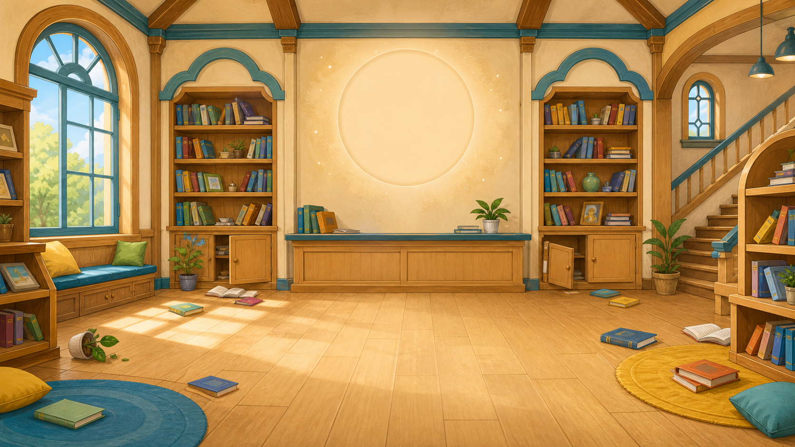
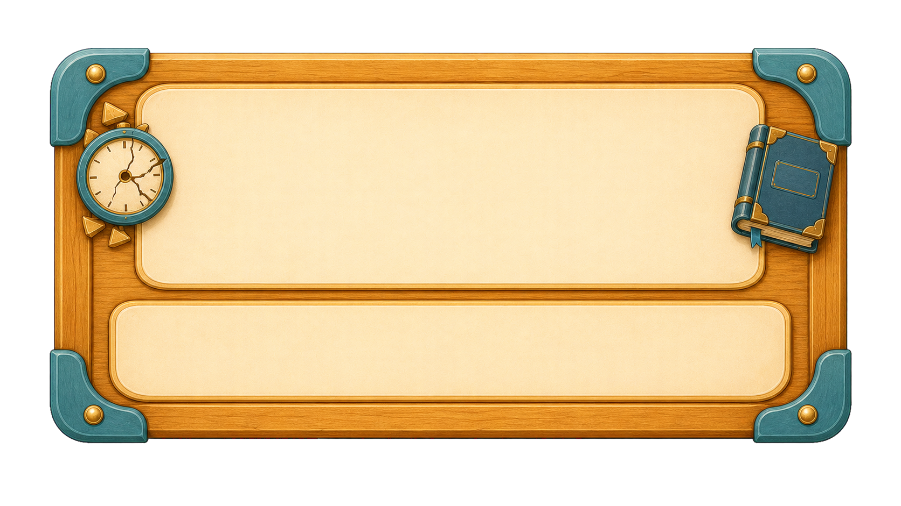
시간이 뒤죽박죽!수학의 힘으로 도서관 시계를 수리하라!
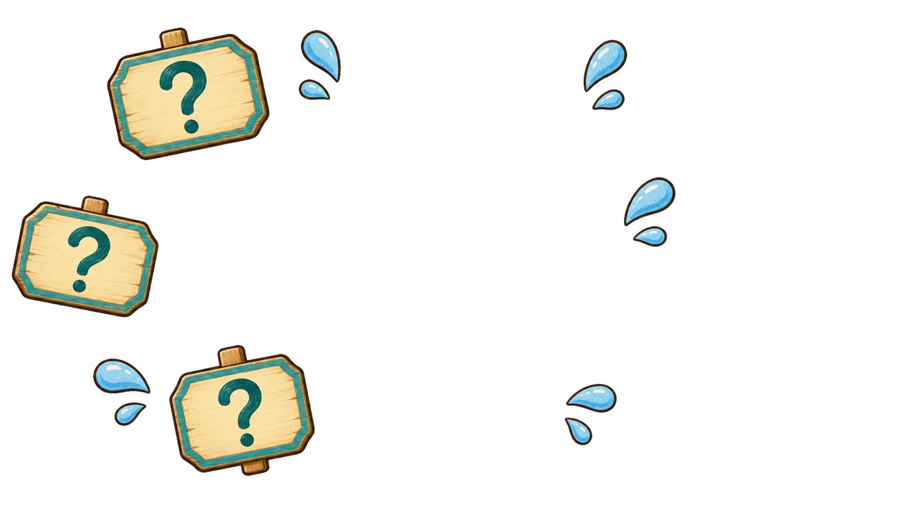
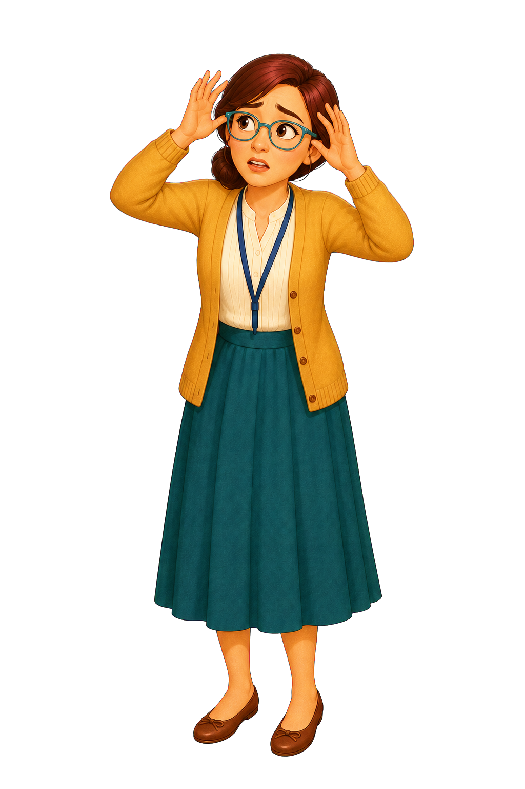
사서 선생님큰일 났어! 도서관 시계가 고장 나서 시간이 뒤죽박죽이야! 당장 독서 교실을 시작해야 하는데 언제인지 알 수가 없어. 누가 좀 도와주세요!
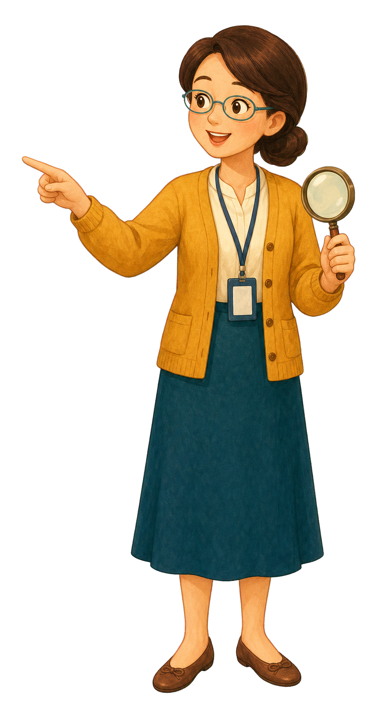
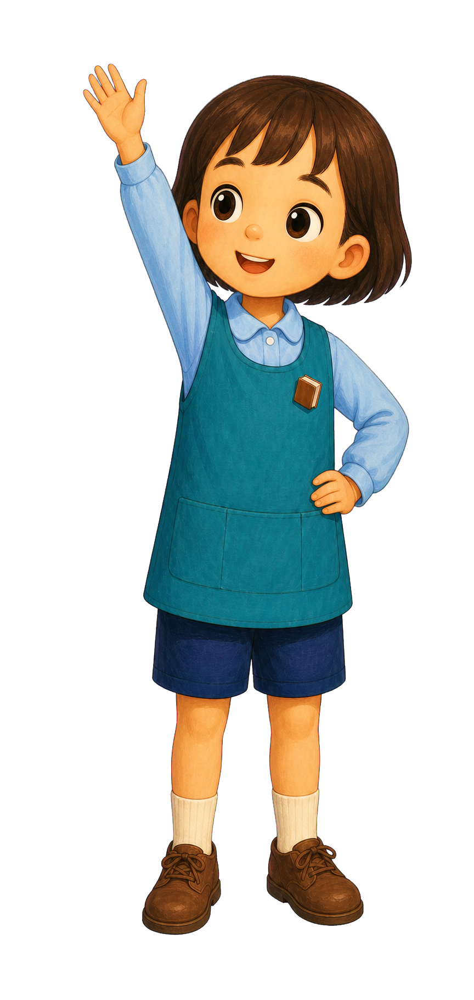
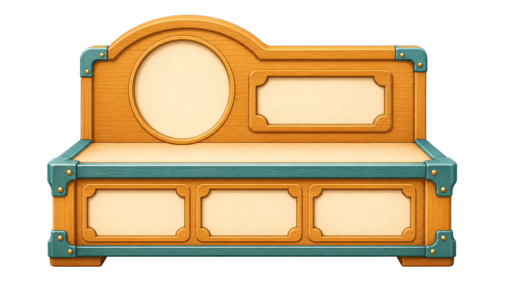
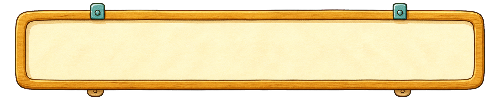
지금 멈춰있는 이 시계가 몇 시인지 먼저 확인해 줄래?
[?]
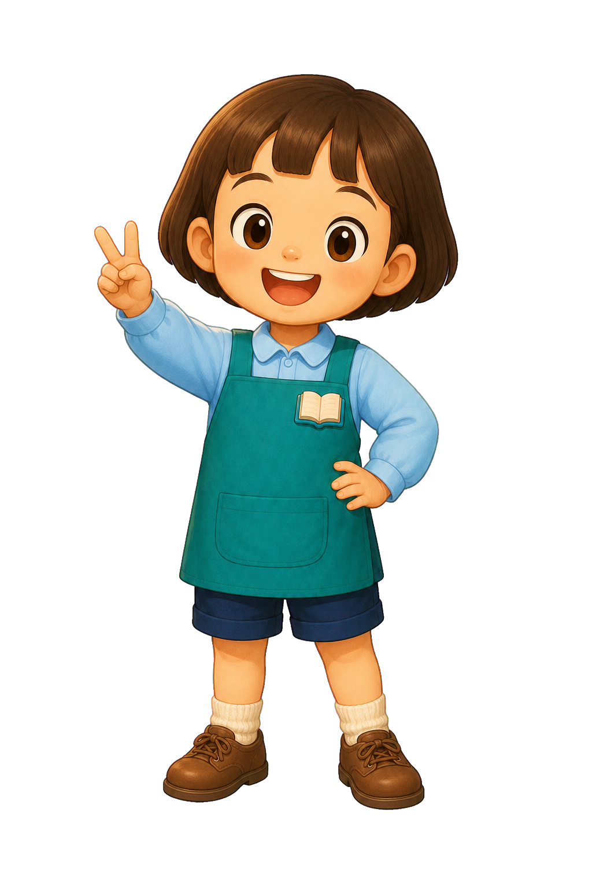
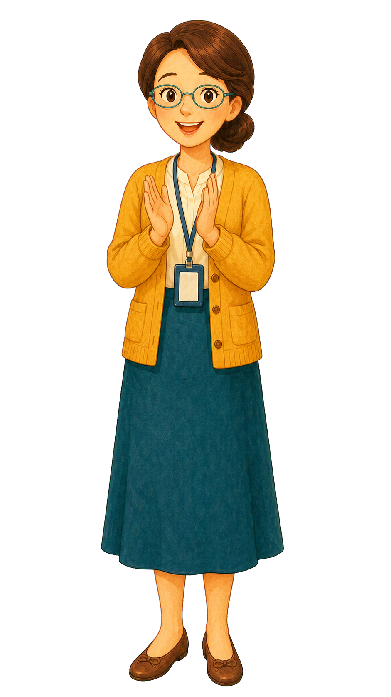
사서 선생님와, 정답이야! 시계를 아주 잘 보는구나. 고마워, 덕분에 첫 번째 시계를 고쳤어. 이제부터 우리 도서관을 수학으로 구해줄거라 믿어!!
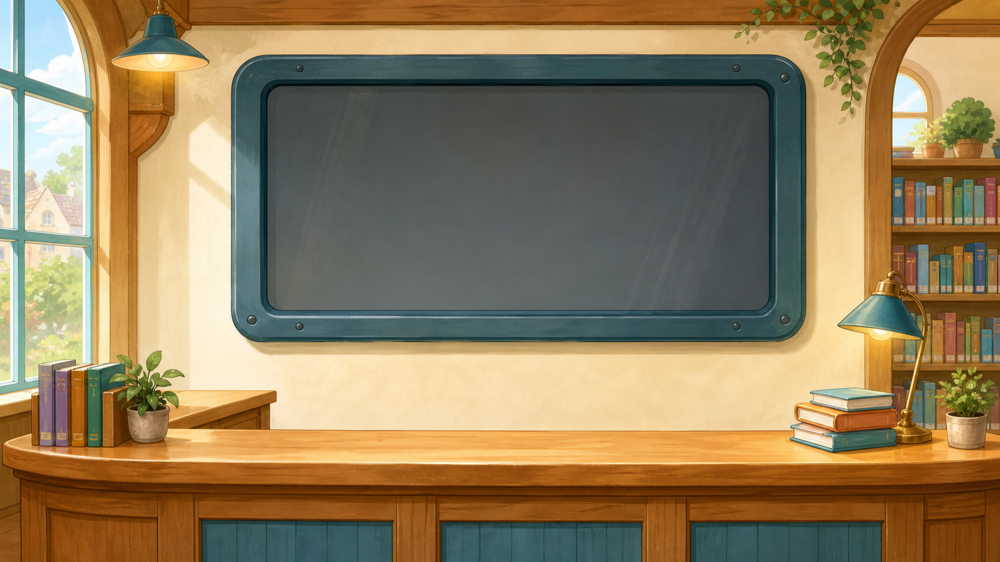
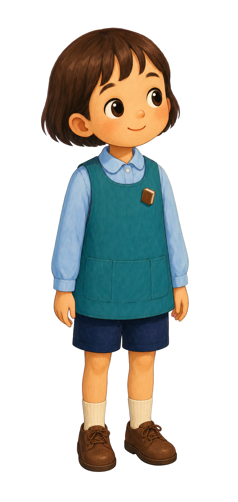
사서 선생님전광판의 시간이 다 깨져버렸어. '몇 분 전'인지 잘 읽어보고, 똑같은 시각을 가리키는 알맞은 시계를 찾아줄래?
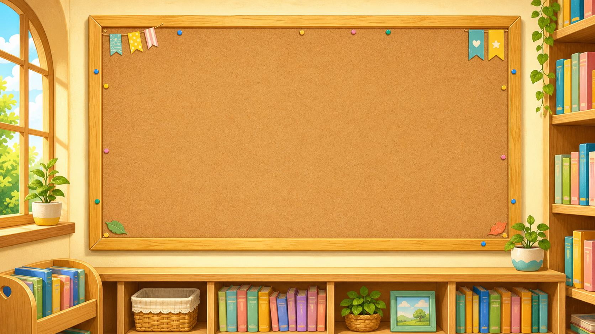
사서 선생님독서 교실 시간표가 지워져서 언제 끝나는지 알 수가 없다. 시계를 보고 걸린 시간을 계산해서 빈칸을 채워줄 수 있겠니?
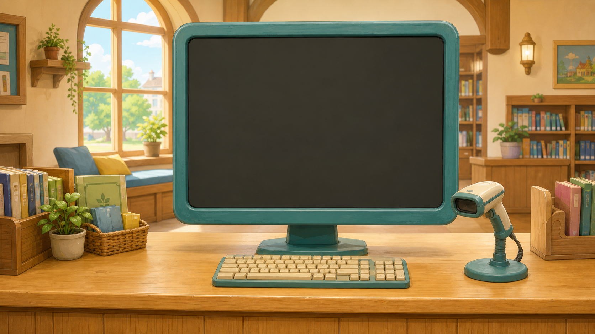
사서 선생님도서 대출 시스템을 다시 켜려면 시간의 규칙을 풀어야 해! 1일과 24시간의 관계를 잘 생각해서 블록을 알맞게 넣어주렴!
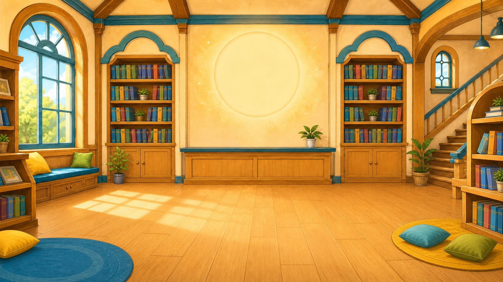
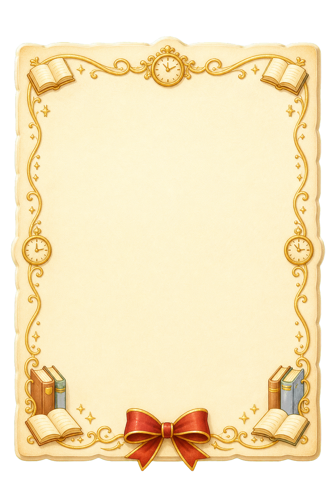
[마을 수리대원 인증서]
마을 수리대원 인증서 (도서관 편)
"위 대원은 정확한 시간 계산으로 도서관 안내문을 완벽하게 수리하였기에 이 증서를 수여합니다."
맞힌 문제 수: 13/13
클리어 소요 시간: 00:00
꼬마 사서언제든 제 수학실력이 필요하면 불러주세요!
사서 선생님정말 고마워! 네 덕분에 도서관이 완벽해졌어!